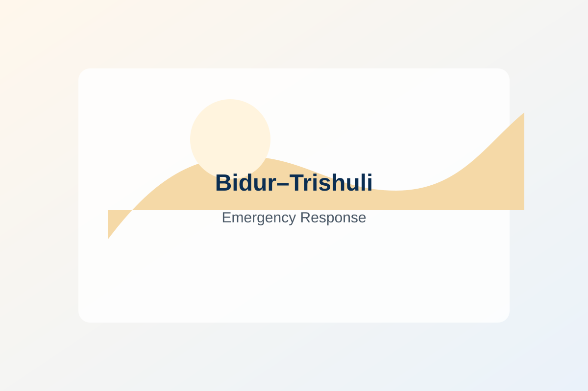

Projects / Bidur–Trishuli
Emergency Response Project
A health and psychosocial response for communities affected by the flash flood and debris flood, with attention to older people and continuity of essential treatment.
Response reach
- 200People received health examination / consultation
- 101Older persons — 48 women, 53 men
- 60Older persons and family members receiving psychosocial counselling
Project Photos
Photos from the Bidur–Trishuli emergency response program.
